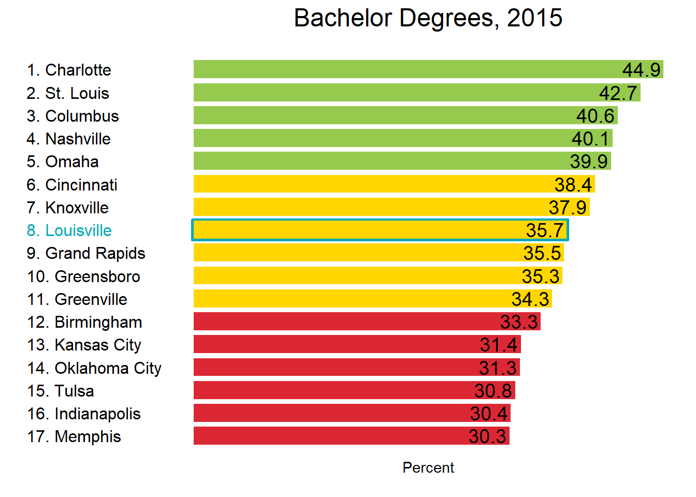
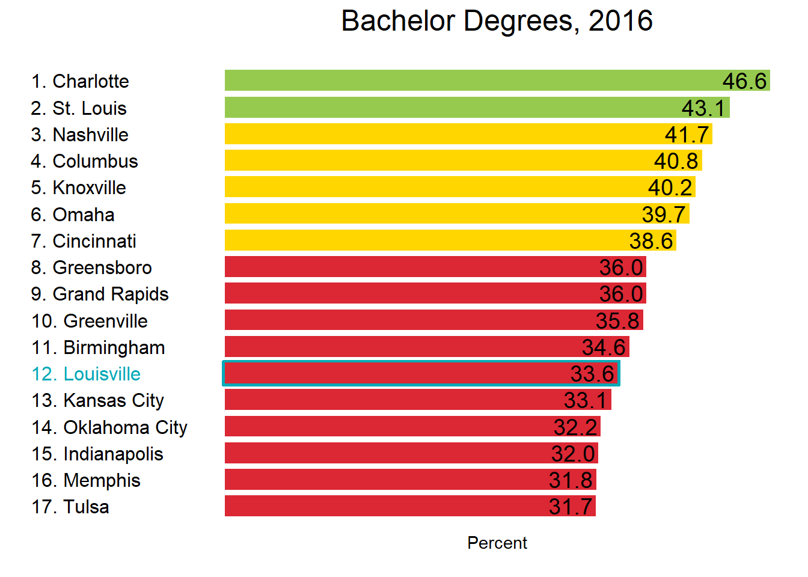
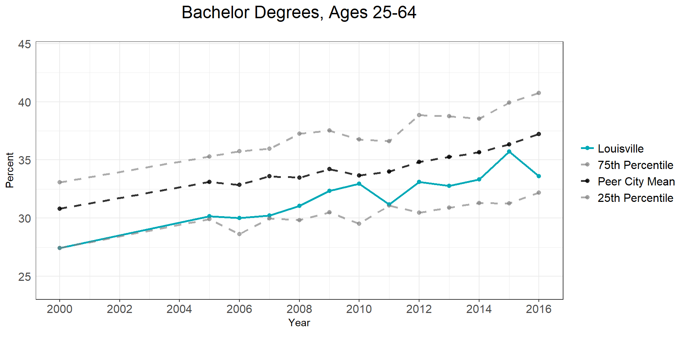
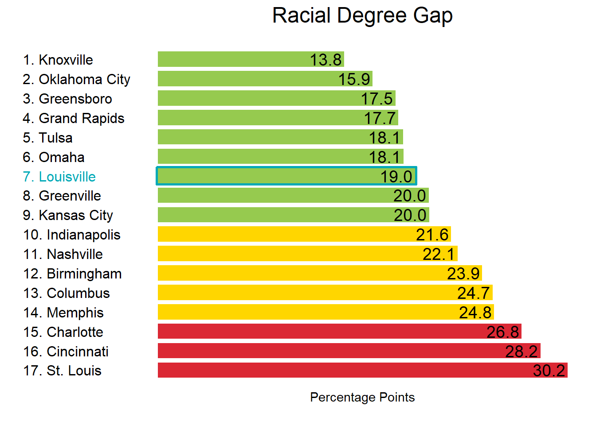
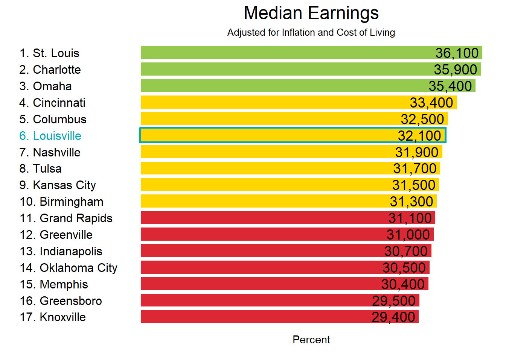
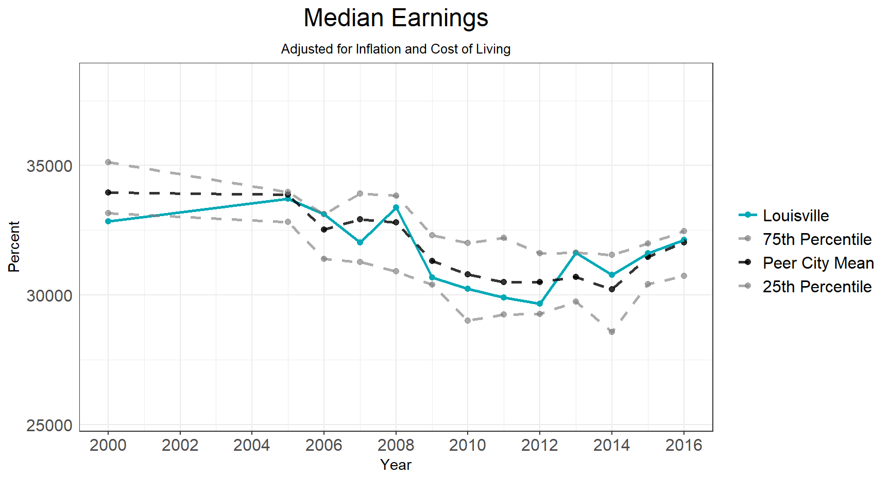
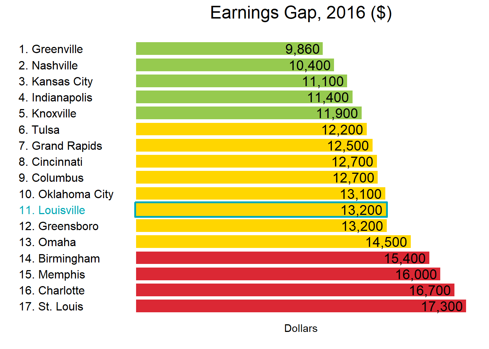
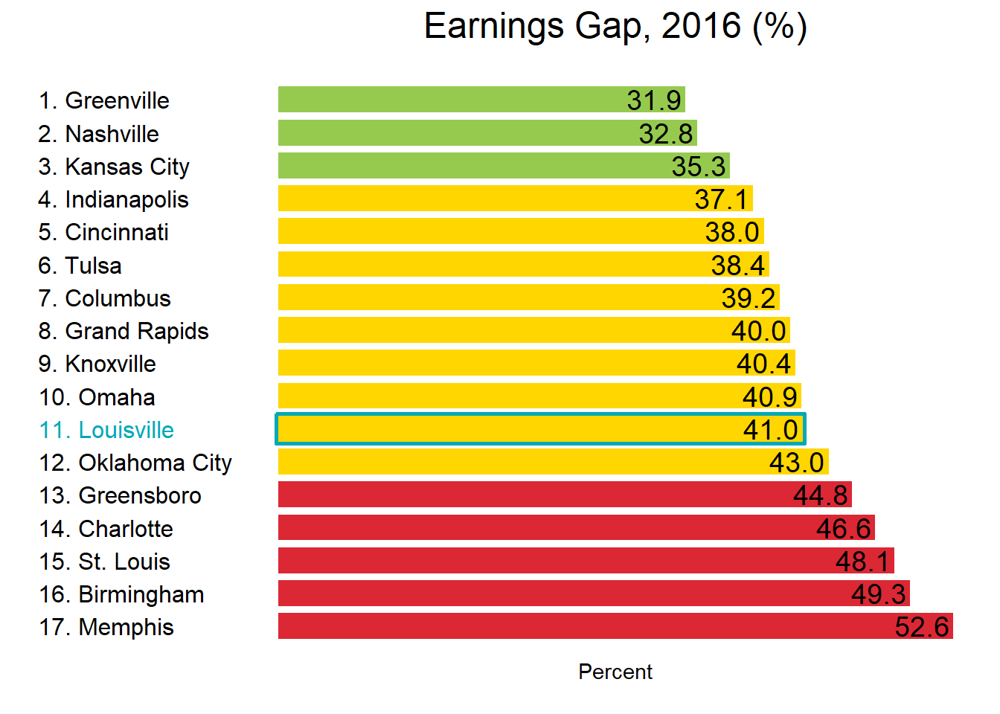

Deep Driver Deep Dive
This document includes data centered around our deep driver metrics.
We have been looking at a really large spread of metrics over the last month or so. This document is a more in-depth approach to the deep drivers. As is tradition, it is really heavy on Education and Jobs and relatively light on QOP and health.
Bachelor Degrees: Ages 25-64
Louisville has made slight progress against its peers in terms of Bachelor degree attainment among all working age adults. Changes among young adults and associate degree holders are more noticable than among all adults, and progress is more steady among white residents.
Compared to our peer cities, our white residents are catching up and black residents are falling behind.
Ranking
Compared to its peers, Louisville is poorly educated. We rank below the middle of the pack. 2015 was an exceptionally favorable year for us, and our high ranking is likely due to survey error. Our ranking in 2016 seemed to also be slightly below what we would expect (especially pronounced among young adults). The 2017 data will shed some light on which is more accurate. 
Trendline
We have made incremental progress toward our peer city mean, though we still fall short. 
Change relative to peers
Knoxville and Tulsa have performed the best and worst among our current peer group since 2005.
This graph is very similar to the one above, except all cities begin at 0. This hones in on the amount of change we’ve seen in Louisville and filters out the fact that we start at a different place than our peer cities. The y-axis shows the percentage-point change since 2005. Here, Louisville is in line with that of our peer cities, assuming the true percentage of bachelor degree holders lies somewhere between the 2015 ands 2016 estimates.
By Race
Here, the top cluster of lines represents white residents and the bottom cluster represents black residents. We generally perform poorly in both.
The educational attainment gap between white and black residents is relatively low in Louisville. This is likely related to our relatively low rate of college attainment overall. The gap is slowly expanding. This is also true for young adult degree holders.

Young Adults
As you can see, young adults have shown much more progress over the last decade. 
The 2015 blip is much more noticable among young adults. We are but a few short months away from the new Census data so we can see what’s actually going on. You’re all invited to my Census data release party.
Median Earnings
This story is not that different from education. We’re staying in line with our peers, bu that means white residents are doing better and better, and progress for black residents has stagnated.
Ranking
Louisville performs well against its peers in median earnings, though the spread is thin and we are just above the middle chunk. 
Trendline
Louisville has made progress over the last few years, but earnings generally declined from 2005 to 2012, so we are below where we used to be. 
Change relative to peers
Louisville has fluctuated around our peer city mean over the course of the past decade. We suffered mre during the Recession but have rebounded better than our peers.
Median earnings are now around $1,600 lower than they were in 2005.
Starting the graph in 2000 instead of 2005 reflects the general progress we made against our peers from 2000 - 2005. Only Oklahoma City, Omaha, and Tulsa ended up net positive over that timeframe. We made progress on all of our other peers except for Cincinatti in that timeframe.
By Race
Here, the top cluster of lines represents white residents and the bottom cluster represents black residents. We generally perform poorly in both. While median earnings for white residents have trended upwardsin the wake of the recession, earnings for black residents have remained flat. White residents are back to making as much as they were in 2005 / 2006, while black residents have largely been excluded from economic progress.
The earnings gap in Louisville is relatively large compared to our peers. Looking at the earnings gap as a percentag vs. raw dollar amount makes no difference. Black workers make around $59 cents for every dollar white workers earn. This does not take into consideration the higher unemployment rate among black residents. 
The earnings gap is persistent and increasing
Quality of Place
Louisville and our peer cities are becoming les racially segregated.
Ranking
The percentage of residents living in the core county is not a particularly useful ranking since it just depends on how big the county is, but…here it is. 
Trendline
Our percentage and that of our peers is generally pretty constant over time. Brookings pointed out that many people seemed to be moving from the core city to the regional city. This does not seem to be an issue for us. The percentage of residents living in the core city (inside the Watterson) remained around 32.5% from 2007 to 2013. 
Racial Dissimilarity
The racial dissimilarity index is the percentage of residents who would have to move for residents of all races to be evenly distributed throughout the city. Louisville’s segregation index decreased by about 2.5 percentage points over that time period. Our best-performing peers saw decreases of 3 to 3.5 percentage points. 


Health
This is a weak spot for us in terms of data, so I will investigate what is avilable and can be broken down by race.
Poor or Fair Health
The poor or fair health measures the percentage of people who descibe their health as such, instead of good, very good, or excellent.


Louisville’s performance on this measure has declined by a few percentage points over the past decade.
Standardizing the change to the same starting place shows that our poor or fair health measure increased by marginally more than our peer city average: The average peer city saw an increase of 2.5 percentage points, while ours increased by 3.1 percentage points.